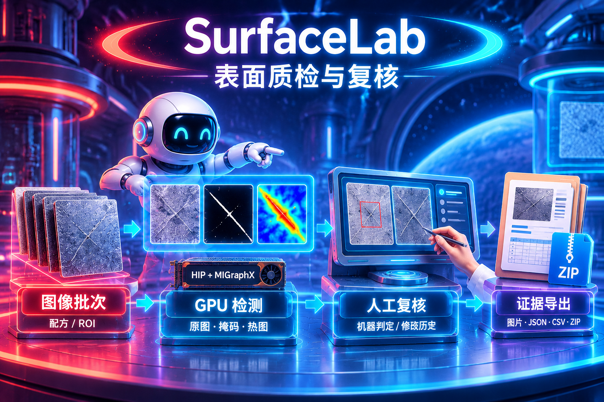

自己写 GPU 计算，或者把 ONNX 模型接进 .NET，现在都可以从这里开始。

之前和大家分享过 OpenVINO、TensorRT 的 C# 接口，这次轮到 AMD GPU 了。经过这段时间的整理，HIP CSharp API 和 MIGraphX CSharp API 的 1.0 正式版都已经发布，配套的 Windows、Ubuntu 24.04 Runtime 包与 HIP 适配包也已经上架 NuGet。
我想做的事情很直接：让 C# 开发者既能自己组织 GPU 计算，也能把现成的 ONNX 模型放进熟悉的 .NET 工程。设备、显存、Kernel、模型、输入输出，都有对应的 C# 入口；需要进一步组合时，还可以把前处理、推理和后处理接起来。
这篇就带大家看看这两个项目能做什么、正式版有哪些值得关注的内容，以及我基于它们继续做的几个应用。先把源码地址放在这里，感兴趣的朋友可以先收藏：
HIP CSharp API
https://github.com/guojin-yan/HIP-CSharp-API
MIGraphX CSharp API
https://github.com/guojin-yan/MIGraphX-CSharp-API
一、GPU 计算与模型推理，C# 都安排上
虽然这次一起发布，但两个项目各有分工：HIP 负责自己写的 GPU 计算，MIGraphX 负责已有模型的编译与推理。
先说 HIP CSharp API。 如果你有自己的图像处理、数值计算或者并行算法，可以通过它管理设备和显存、复制数据、编译并启动 Kernel，再用 Stream 和 Event 组织执行顺序。自定义 Kernel 使用 HIP C/C++ 编写，C# 负责调用与资源管理。
我在接口层保留了两种用法：常见任务可以直接使用托管对象，需要深入原生能力时，也有低层 API 可以继续往下走。IDisposable、显式资源所有权、运行时加载与诊断这些工程细节，也一并放进了库里。这次正式版进一步整理了 HIPRTC 查找、发布部署和互操作路径，让计算代码更方便接进实际工程。
已经有 ONNX 模型的朋友，可以直接看 MIGraphX CSharp API。 模型解析、计算图编译、输入张量准备、执行和结果读取，都可以在 C# 中完成。动态输入、程序保存与加载、模型缓存、多输入多输出，也有对应的接口。
这次 MIGraphX 正式版接入了 MIGraphX 2.18 引擎，提供 Windows 与 Ubuntu 24.04 的独立 Runtime 包，并将 HIP 适配器更新到 1.0.0 依赖组合。模型示例也一起整理好了：
| 示例 | 可以体验的内容 |
|---|---|
| YOLO26 | 目标检测、分类、实例分割、姿态估计、旋转框检测 |
| PaddleOCR v4 / v5 / v6 | 文本检测、文字识别、裁剪与批量处理 |
| CLIP | 图片与英文描述匹配、图片和文本双向检索 |
| PP-Structure | 文档方向、版面、OCR 与表格处理 |
这样一来，想研究 GPU 编程，可以从 HIP 的设备、内存、HIPRTC 和综合案例入手；想部署模型，可以直接顺着 MIGraphX 的完整示例往下看。两个托管库覆盖 .NET Framework 4.6–4.8.1、.NET Core 3.1 和 .NET 5–10，并提供中英文 XML 文档，方便在不同 .NET 工程中使用。
而这两个项目放到一起，还有一个我比较看重的用法：把模型前后的数值处理也接入 GPU。

两个 Core 可以独立使用，需要连接 HIP Stream 和设备缓冲区时，再加入 HIP.Interop。
比如一条视觉处理流程，可以先用 HIP 做缩放、归一化和张量排列，再交给 MIGraphX 推理，之后继续用 HIP 做结果解码、筛选或者掩码计算，最后把业务需要的结果交回 C#。HIP.Interop 提供对应的输入提交、Stream 互操作与设备输出接口，让这些步骤能够在同一个应用里组织起来。
从自己写计算，到调用已有模型，再到把两者组合，这就是这次联合发布希望带给 .NET 开发者的使用空间。下面把安装入口也放全，方便大家直接开始。
二、七个正式版 NuGet 包，一次整理好
这次发布的包分为 Core、HIP 适配器和平台 Runtime。Core 是日常引用的 C# 接口；Runtime 提供对应平台的原生运行库；需要两个库协同时，再选择 HIP.Interop。
| NuGet 包 | 正式版本 | 地址 |
|---|---|---|
JYPPX.ROCm.HIP.CSharp.API |
1.0.0 |
https://www.nuget.org/packages/JYPPX.ROCm.HIP.CSharp.API/1.0.0 |
JYPPX.ROCm.HIP.CSharp.API.Runtime.win-x64 |
10.1.0 |
https://www.nuget.org/packages/JYPPX.ROCm.HIP.CSharp.API.Runtime.win-x64/10.1.0 |
JYPPX.ROCm.HIP.CSharp.API.Runtime.ubuntu.24.04-x64 |
10.1.0 |
https://www.nuget.org/packages/JYPPX.ROCm.HIP.CSharp.API.Runtime.ubuntu.24.04-x64/10.1.0 |
JYPPX.ROCm.MIGraphX.CSharp.API |
1.0.0 |
https://www.nuget.org/packages/JYPPX.ROCm.MIGraphX.CSharp.API/1.0.0 |
JYPPX.ROCm.MIGraphX.CSharp.API.HIP.Interop |
1.0.0 |
https://www.nuget.org/packages/JYPPX.ROCm.MIGraphX.CSharp.API.HIP.Interop/1.0.0 |
JYPPX.ROCm.MIGraphX.CSharp.API.Runtime.win-x64 |
1.0.0 |
https://www.nuget.org/packages/JYPPX.ROCm.MIGraphX.CSharp.API.Runtime.win-x64/1.0.0 |
JYPPX.ROCm.MIGraphX.CSharp.API.Runtime.ubuntu.24.04-x64 |
1.0.0 |
https://www.nuget.org/packages/JYPPX.ROCm.MIGraphX.CSharp.API.Runtime.ubuntu.24.04-x64/1.0.0 |
HIP Core、MIGraphX Core 与适配器使用 1.0.0；HIP Runtime 包版本为 10.1.0，MIGraphX Runtime 1.0.0 内包含 MIGraphX 2.18.0 引擎。按自己的用途和平台选择即可。
运行前，按项目部署指南准备 AMD 驱动与对应的 ROCm 环境；本文模型示例使用 ROCm 10.1 配套依赖。安装步骤和依赖配置在仓库中都有说明：
HIP Runtime 部署指南
https://github.com/guojin-yan/HIP-CSharp-API/blob/main/docs/guides/runtime-distribution-10.1.0.md
MIGraphX Runtime 部署指南
https://github.com/guojin-yan/MIGraphX-CSharp-API/blob/v1.0.0/docs/guides/runtime-deployment.md
包和环境准备好之后，就可以回到 C# 了。下面用两段小代码，先把设备和模型各跑一次。
三、从发现 GPU，到运行第一个 ONNX
先让程序找到 AMD GPU。 以 Windows x64、.NET 10 为例，创建控制台工程，安装 HIP Core 与 Windows Runtime：
dotnet new console -n HipHello -f net10.0
cd HipHello
dotnet add package JYPPX.ROCm.HIP.CSharp.API --version 1.0.0
dotnet add package JYPPX.ROCm.HIP.CSharp.API.Runtime.win-x64 --version 10.1.0
把 Program.cs 改成下面的代码，初始化运行时，再枚举设备：
using JYPPX.ROCm.HipSharp;
using var runtime = new HipRuntime();
runtime.Initialize();
var versions = runtime.GetVersionInfo();
Console.WriteLine($"HIP Runtime: {versions.RuntimeVersion}");
Console.WriteLine($"HIP Driver: {versions.DriverVersion}");
foreach (var device in runtime.GetDevices())
{
Console.WriteLine(device);
}
执行 dotnet run -c Release，我本机的输出如下：
HIP Runtime: 7.16.26385
HIP Driver: 7.16.26385
0: AMD Radeon PRO W7900
看到设备之后，就可以继续运行 HIP 仓库里的 HIPRTC VectorAdd，体验编译 Kernel、传递参数和执行计算。这里打印的是原生运行时报告的版本，和 NuGet 包版本分别标识不同内容。
接下来，让 GPU 跑一个 ONNX 模型。 另建一个工程，安装 MIGraphX Core 和 Windows Runtime：
dotnet new console -n MigraphxHello -f net10.0
cd MigraphxHello
dotnet add package JYPPX.ROCm.MIGraphX.CSharp.API --version 1.0.0
dotnet add package JYPPX.ROCm.MIGraphX.CSharp.API.Runtime.win-x64 --version 1.0.0
仓库里有一个可生成的 Identity 模型，输入为 float32[1,4]，输出与输入一致，适合先看清整个调用过程。安装 Git 与 PowerShell 7 后，在当前工程目录执行：
git clone --depth 1 --branch v1.0.0 https://github.com/guojin-yan/MIGraphX-CSharp-API.git ../MIGraphX-CSharp-API-v1.0.0
pwsh -File ../MIGraphX-CSharp-API-v1.0.0/tests/fixtures/generate-onnx-identity.ps1 -OutputPath "$PWD/identity.onnx"
然后把 Program.cs 改为下面的代码。解析、编译、准备输入和执行，都在这里：
using JYPPX.ROCm.MIGraphXSharp;
var environment = MIGraphXEnvironment.ProbeSystem();
if (!environment.ObjectsExecuted)
throw new InvalidOperationException(string.Join("; ",
environment.Diagnostics.Select(d => d.Message)));
string native = environment.LoadedPath!;
using var options = new MIGraphXOnnxOptions(native);
using var program = MIGraphXProgram.ParseOnnxBuffer(
File.ReadAllBytes("identity.onnx"), options);
using var target = new MIGraphXTarget(native, "gpu");
using var compileOptions = new MIGraphXCompileOptions(native, offloadCopy: true);
program.Compile(target, compileOptions);
var shape = program.GetParameterShapes()["input"];
using var input = MIGraphXArgument.Create(native, shape, new[] { 1f, 2f, 3f, 4f });
using var parameters = new MIGraphXParameterMap(native);
parameters.Add("input", input);
using var outputs = program.Run(parameters);
Console.WriteLine(string.Join(", ", outputs[0].ToArray<float>()));
执行 dotnet run -c Release，得到：
1, 2, 3, 4
这个例子先用 offloadCopy: true 组织主机输入输出。换成自己的模型时，按模型信息准备输入名、尺寸、类型和预处理即可；持续处理数据时，可以在启动阶段完成解析与编译，后续复用同一个 program。
想直接看图像结果，也可以从前面提到的 YOLO26、PaddleOCR、CLIP 和 PP-Structure 开始。相关源码入口都在这里：
HIP 教程、HeatDiffusion 与 VisualInspection 综合案例
https://github.com/guojin-yan/HIP-CSharp-API/tree/main/samples
MIGraphX 完整模型示例
https://github.com/guojin-yan/MIGraphX-CSharp-API/tree/v1.0.0/samples
设备能调用、模型能运行之后，我还想再往前走一步：把输入导入、任务处理、人工复核和报告导出都加上，看看这些接口放进完整应用里是什么样子。于是就有了下面这组项目。
四、接口之外，我还做了四个应用
为了把这些接口放进具体场景，我还做了一个 ROCm C# 应用集合，围绕图像质检、信号分析、单据核验和视频事件检索四个方向展开。每个项目按需使用 HIP 或 MIGraphX，把数据导入、GPU 处理、结果复核和报告导出连起来，也方便大家参考其中的代码，继续做自己的应用。
SurfaceLab：表面质检与复核。

应用流程示意：图像批次 → GPU 检测 → 人工复核 → 证据导出。
SurfaceLab 是一个本机图像质检工作台。从批量导入 PNG、JPEG、BMP 图像开始，设置检测配方和 ROI，再选择 HIP GPU 规则或 MIGraphX 异常模型进行处理。检测之后，可以对照原图、缺陷掩码和异常热图，查看具体区域，再进入人工复核队列。
我比较看重的是检测之后的使用过程：机器判定保留，人工修改单独记录，修改原因和历史可以回看，最后把证据图、CSV、JSON 与离线报告一起导出。如果你准备做图像检测工具，可以参考它怎样把 GPU 处理、批次任务和复核界面组织成一个应用。
项目源码：
https://github.com/guojin-yan/ROCm-CSharp-Projects/tree/main/projects/IndustrialInspection
SignalDiagnostics：把波形变成可以回看的分析结果。

应用流程示意：离线信号 → HIP FFT → 频谱 / PSD → 规则复核 → 报告归档。
同样的处理与复核思路，放到波形数据里，就是 SignalDiagnostics。它读取离线 CSV 信号，使用 HIP 执行 FFT，完成分窗计算、频谱与功率谱密度（PSD）分析，再按频段规则整理需要关注的结果。查看某个分析窗口时，还可以定位到原始样本区间，把频域结果和时域波形对应起来。
分析结果可以导出为 HTML、JSON 和 CSV，便于离线查看与后续比较。这个项目更适合想研究 GPU 数值计算的朋友：从输入数据、窗函数到频谱结果，看看怎样用 HIP 实现计算，再用 C# 组织完整的文件分析流程。
项目源码：
https://github.com/guojin-yan/ROCm-CSharp-Projects/tree/main/projects/SignalDiagnostics
DocumentEvidence：文字识别之后，继续核验字段与证据。
应用流程示意：指定文字行 → MIGraphX OCR → 字段与金额核验 → 证据导出。
对于单据，文字识别只是开始，还需要把文字对应到页面和业务字段。DocumentEvidence 可以导入已有 OCR 结果，也可以使用 MIGraphX 识别原页中指定的文字行，再按模板提取编号、数量、单价、金额等字段，检查置信度与金额之间的关系，并进入人工纠正和复核流程。
它会把机器读取值、人工修改、原图坐标和修改历史分别保留，再导出可独立阅读的 HTML 报告以及 JSON、CSV。这样，查看一个字段时，就能回到对应的页面证据。想把 OCR 接进自己的单据处理程序，可以参考这套从识别结果到字段核验、再到报告交付的组织方式。
项目源码：
https://github.com/guojin-yan/ROCm-CSharp-Projects/tree/main/projects/DocumentEvidence
VideoEventSearch：从一段视频，找到值得回看的事件。
应用流程示意：视频原帧 / PTS → 检测与跟踪 → 规则事件 → 候选索引与证据回看。
文档按页面组织证据，视频则按时间组织。VideoEventSearch 面向离线视频，保留抽取帧的原始时间戳（PTS），结合 MIGraphX 目标检测与跟踪，按区域进入、离开、越线和停留等规则整理候选事件。后续可以按事件类型、目标类别和时间范围检索，定位到对应的原始帧。
它把逐帧检测结果继续组织成时间线、事件索引和离线报告，让使用者能从“某一帧检测到了什么”，走到“哪段时间值得回看”。如果你已经有目标检测代码，想进一步加入跟踪、规则和证据导出，这个项目可以作为继续扩展的参考。
项目源码：
https://github.com/guojin-yan/ROCm-CSharp-Projects/tree/main/projects/VideoEventSearch
四个项目从不同任务出发，最终都回到同一个目标：把 GPU 计算和模型推理，接进有输入、有操作流程、也有结果交付的 C# 应用。后面我会再分别展开它们的实现和使用方法，大家也可以先从源码里挑一个感兴趣的方向试试。
五、已经开源，欢迎大家一起试试
从之前的 OpenVINO、TensorRT，到这次的 HIP 和 MIGraphX，我一直想做的事情都比较直接：把计算能力接进 C#，让大家继续用熟悉的 .NET 工程组织自己的应用。
这次两个 1.0 正式版，把自定义 GPU 计算和 ONNX 模型推理一起带到了 AMD GPU 这条路上。想写 Kernel，可以从 HIP 开始；想部署模型，可以从 MIGraphX 开始；想做完整应用，也有组合接口和案例可以继续参考。
如果这些项目对你有帮助，欢迎点个 Star，也欢迎提交 Issue、分享自己的运行效果，或者一起补充更多有意思的计算与模型示例。
| 资源 | 地址 |
|---|---|
| HIP 项目 | https://github.com/guojin-yan/HIP-CSharp-API |
| MIGraphX 项目 | https://github.com/guojin-yan/MIGraphX-CSharp-API |
| ROCm C# 应用案例集合 | https://github.com/guojin-yan/ROCm-CSharp-Projects |
项目源码采用 Apache-2.0 开源。欢迎大家把自己的想法，也接进这套 C# + AMD GPU 的工程里。
Copyright © 2026 Guojin Yan / 椒颜皮皮虾。